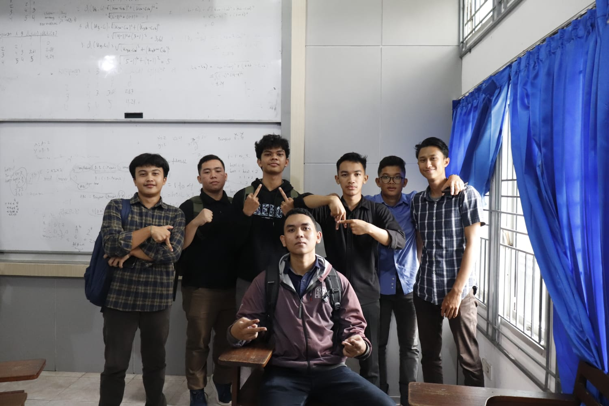
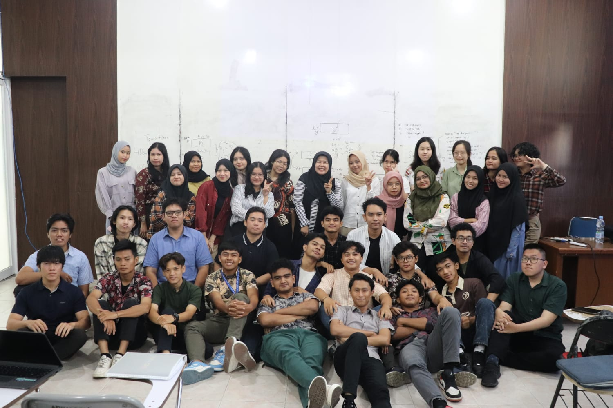

Tentang Muhammad Sulthan Zaki Nasution

Muhammad Sulthan Zaki Nasution adalah anak kedua dari dua bersaudara. Dia dilahirkan pada tanggal 19 Januari 2006 di Binjai. Semenjak masih kecil Zaki sudah memiliki minat dan bakat yang sangat tinggi sekali terhadap segala sesuatu
yang berbau programming, Zaki juga sudah sangat senang dengan film-film hacker dan film-film robot
sehingga dia bercita-cita menjadi hacker dan programmer
Saat ini Muhammad Sulthan Zaki Nasution, sedang menempuh pendidikan di Universitas Sumatera Utara di jurusan Ilmu Komputer untuk mencapai cita-citanya. Zaki sudah banyak belajar mengenai berbagai macam bahasa pemrograman
yang sangat menggugah keingintahuannya. Saat ini Zaki ingin belajar menjadi seorang Cyber Security
Riwayat Pendidikan
Sekolah Dasar Negeri 020267 Binjai
Sekolah Dasar | 2011 - 2017
Sekolah Menengah Pertama Negeri 1 Binjai
Sekolah Menengah Pertama | 2017 - 2020
- Lulus Sebagai Siswa Terbaik
- Lulus Jalur Prestasi
- Tim Olimpiade Matematika
Sekolah Menengah Atas Negeri 5 Binjai
Sekolah Menengah Atas | 2020 - 2023
- Lulus Sebagai Siswa Terbaik
- Lulus Jalur Prestasi
- Lulus Jalur undangan Universitas Sumatera Utara
Universitas Sumatera Utara
Strata 1 Ilmu Komputer | 2023
Jadwal Mata Kuliah
Senin
| Waktu |
Mata Kuliah |
Dosen/Asisten Lab |
Ruangan |
SKS |
| 13.10 |
Aplikasi Komputer Akuntansi |
Dio Agung Herubawa SE., M.Acc |
GL 12 |
2 |
Selasa
| Waktu |
Mata Kuliah |
Dosen/Asisten Lab |
Ruangan |
SKS |
| 13:30-15:00 |
Basic Speaking |
Dr. Alemina Br. Perangin-angin S.S., M.Hum. |
D-103 |
2 |
Rabu
| Waktu |
Mata Kuliah |
Dosen/Asisten Lab |
Ruangan |
SKS |
| 08:00-10:30 |
Basis Data |
Insidini Fawwaz, S.Kom., M.Kom. |
D-105 |
3 |
| 13.00-14.40 |
Praktikum Basis Data |
Alvian |
Lab. 3 |
2 |
| 15:30-17:10 |
Wirausaha Digital |
T. Hemy Febriana Harumy, S.Kom., M.Kom. |
D-101 |
2 |
Kamis
| Waktu |
Mata Kuliah |
Dosen/Asisten Lab |
Ruangan |
SKS |
| 08:00-10:30 |
Struktur Data |
Anandhini Medianty Nababan, S.Kom., M.Kom. |
D-105 |
3 |
| 12:10-14:40 |
Pemrograman Web |
Dewi Sartika Br. Ginting, S.Kom., M.Kom. |
D-105 |
3 |
| 14:40-17:10 |
Kecerdasan Buatan |
T. Hemy Febriana Harumy, S.Kom., M.Kom. |
D-105 |
3 |
Jumat
| Waktu |
Mata Kuliah |
Dosen/Asisten Lab |
Ruangan |
SKS |
| 09:40-11:20 |
Praktikum Struktur Data |
Stephen J.Rusli |
Lab. 3 |
2 |
| 13:50-15:30 |
Etika Profesi |
Dr. Eng Ade Candra, S.T., M.Kom. |
D-106 |
2 |
| 15:30-17:10 |
Praktikum Pemrograman Web |
Kybe |
Lab. 3 |
2 |
Galeri Zaki
2 / 4

Lelaki-lelaki hebat
3 / 4

Hari terakhir bersama Bu Dian
4 / 4
.jpg)
Bukber Bersama teman SMA
❮
❯